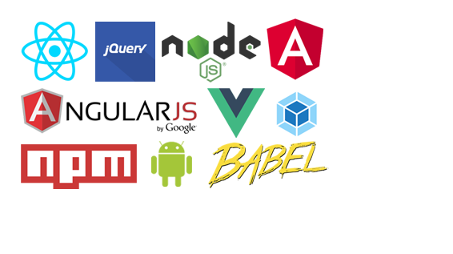

GetSpriteXY
|
What, Why, How?
Bookmark our NEW url https://getspritexy.netlify.com/
Q: What does this site do ?
A: Using this site you can find the co-ordinates of the icons inside a CSS sprite.
Q: How to use it?
A: Upload your CSS sprite. The uploaded sprite will be displayed. Use mouse to select an icon. CSS will generated. Copy and use it in your CSS class.
Icons credit
Gnome Desktop Project
Yusuke Kamiyamane
Aral Balkan
X
A: Using this site you can find the co-ordinates of the icons inside a CSS sprite.
Q: How to use it?
A: Upload your CSS sprite. The uploaded sprite will be displayed. Use mouse to select an icon. CSS will generated. Copy and use it in your CSS class.
Icons credit
Gnome Desktop Project
Yusuke Kamiyamane
Aral Balkan
X
Change background color

Hide
X =
Y =
Width = Height =
Generated sprite image
Width = Height =
Generated sprite image